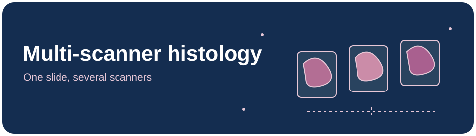
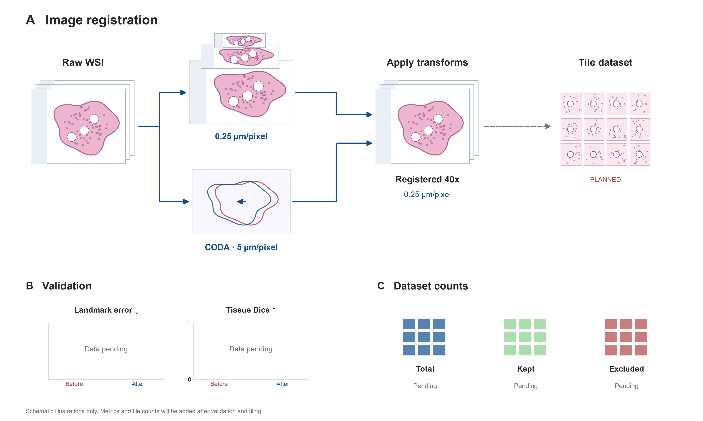

RESEARCH · COMPUTER VISION
Multi-scanner histology
Aligning whole-slide images acquired on different scanners so corresponding tissue regions can be compared.
2,720 images across eight scanners in the research collection.
Methods and scope
My work at Johns Hopkins included registration workflows and benchmarking scanner variation. The public repository focuses on image preparation and resolution-aware registration with Python, MATLAB and CODA. It documents the workflow separately from the research collection.
